Extension for Module 1:
Extension 1.1: Speed Limit Fine Calculator (3 points)
Authors:
- Ron K. Cytron
- Michael Waldman
- Alan Waldman
- Cameron Wong
You will calculate the fine one would have to pay for going over the speed limit in the state of Massachusetts according to the Massachusetts DMV.
By completing this work, you demonstrate that you can:
- Create a Java class on your own
- Arrange for the class to take inputs of interest
- Compute output values of interest
- Produce meaningful output based on your computations
Have you ever received a ticket for speeding? If so, how do you feel about it? Were you going more or less than 10 miles over the speed limit? The objective of this extension is not only to allow you to practice assignment statements and data types but also for you to create a practical tool, though of course we hope you never need to compute a speeding fine for yourself.
Consider the following story:
- Pat is driving a Mini Cooper at 85 MPH on a road that has the speed limit of 60 MPH.
- Pat is therefore going 25 MPH over the speed limit.
-
If Pat is caught speeding, what would be Pat's fine?
For this assignment, we model the fine after Massachusetts law:
- A fine is assessed only if the driver's speed is at least 10 MPH over the speed limit.
- For the first 10 MPH over the speed limit, the fine is $50 no matter what
- For any additional MPH past the first ten, $10 are added to the fine
- Thus, Pat owes $50 for going at least 10 MPH over the speed limit (60+10=70 MPH). To this, we add $10 * 15 = $150 for the additional 15 MPH. Thus, Pat owes $200.
Procedure
-
First, create a SpeedLimit Java class in the speeding package of the extensions source folder.
Do this by
- right (control) clicking on the speeding package, and then
- chooose New -> Class
- Type in the name of the class (SpeedLimit)
- Be sure to check the box so that public static void main is included
- Click OK
- Write code to prompt the user for the information you need to compute the fine, assuming the fine is computed as described above.
- Consider and decide upon the data type to represent information of interest to this problem.
- You must ask the user for some input values. If you do not recall how to use ArgsProcessor, review the video entitled Prompting the user for input values.
- Arrange for your program to produce output such that:
- For the first 10 miles over the speed limit, the fine is 50 no matter what
- For any additional mile past the first ten, 10 dollars are added to the fine
Beware: Make sure your program works for 0 MPH and all possible positive velocities.
- Finally, your program should print how many miles you were going over the speed limit and how much money the fine will be.
Sample output based on the example story above:
You reported a speed of 85 MPH for a speed limit of 60 MPH.
You went 25 MPH over the speed limit.
Your fine is $200.
You must compute the required information without using if statements. To evaluate an expression conditionaly, use the ternary operator, an example of which follows:
int x = (y > 7) ? 12 : 5;The variable x is set to 12 if y's value is greater than 7; otherwise x is set to 5.
Submitting your work
To submit your work, contact the instructor or a TA. They will walk you through the submission process. Be prepared to show them the work that you have done and answer their questions about it!
Extension 1.2: Image Processor (6 points)
Authors:
- Anne Bracy
- Ron Cytron
- Ken Goldman
- Logan Sorentino
Background
Pixels
The word pixel stands for Picture Element. A pixel is a small part of a picture. Pixels are the little dots that make up LCD screens. When you see a low-resolution picture that is grainy, the grain you're seeing are the pixels.
Representing color in Java
Pixels are made up of 3 colors: red, green, and blue (hence the term RGB). The color of a pixel is made up of a combination of the intensities of each of red, green, and blue components. Intensities range from 0 (meaning none of that color is present) to 255 (meaning as much as possible of that color is present). You declare a new pixel by coding
new Color(redValue, greenValue,blueValue)
where redValue is the intensity (an integer between 0 and 255) of
red, greenValue is the intensity of green, and blueValue is the intensity of blue.
For example, you get the color black with new Color (0,0,0) (0
intensity for all colors). You get red with new Color (255,0,0)
(highest intesity for red, 0 intensity for green and blue).
Filters
This work involves writing a number of filters that are applied to images to achieve a given result. There are two kinds of methods that you complete, and each is described below:
int foo(int pixelComponent)
Methods with the above signature take in a single pixel component intensity value: an integer between 0 and 255 inclusively. They are obligated to return an intensity value as their result.
These methods are used by the course software as shown below:
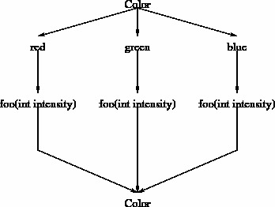
- A Color object is broken into its red, green, and blue components.
- Each component is passed to your foo method, and the result of that function is retained.
- The three results are combined into a new Color object.
In other words, the foo function is used as a filter on each of a Color's components. The foo function is unaware of which component it is processing: it treats each equally.
Color bar(Color c)
Methods with the above signature accept and produce a standard Java Color object. These methods can themselves decompose a Color object into its components and create a resulting Color object to achieve whatever effect is desired.
Project: Image Processing Methods
-
In Eclipse, open the extensions source folder and then open the imageprocessor package. Find and open the ImageProcessor class.
This is the main program you run to see the results of your work.
Go ahead and run it as a Java application. You should see a window pop up with some images preloaded.
- Try the darker filter. It has been implemented for you, and it should produce an image in the Target window that resembles the image in the source1 window, but is a bit darker.
- Try the combine filter. It has also been implemented but its effects may seem a bit strange. You will soon implement a smarter version of this kind of a filter.
-
The other methods are not yet implemented, but you are free to try them.
By the way, you can drag images between the icon panel at the top and the working panels in the middle, or vice versa, so that you can manipulate other images than the ones that are preloaded.
You can also load your own images by clicking on the icon that resembles a plus sign.
Directions:
First, right click on the ImageProcessorTest class, and Run As a JUnit Test.
- On the left you should see a whole bunch of test names with red or blue x's by them, indicating that they are not being passed. * Every time you complete a piece of code correctly, one of the tests will pass, and a small green x will appear beside it.
- Once all of the tests pass, a satisfying green bar will appear in place of the red one that you see now. You will not get this green bar in this extension, though, because you will not be doing any work on the bgSubtract or bdReplace methods. To get the green bar you must go on to the next extension.
Now open the Filters class and begin your work as described below.
It is strongly suggested that you re-run the unit test, and run ImageProcessor to test each filter after its completion before you move on to the next filter. This will ensure that you are making progress and not going down a wrong path.
Complete the provided stub methods as described below. In the method bodies, use mathematical expressions. Do not use a conditional (if) statement.
Intensity filters
Use no conditional execution for this part: only arithmetic expressions as you have learned them in Module 1.
-
Complete the method called copy, so that each provided intensity value is copied exactly from the source to the target panel.
Hint: This is a very simple method.
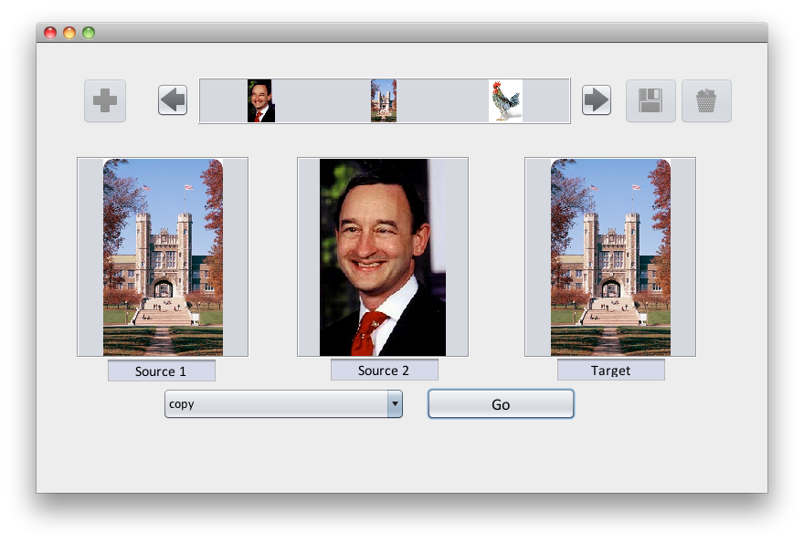
-
Complete the method that will composite the images in the two source panels by averaging their components. This method accepts two parameters, which are color components from the two source panels.
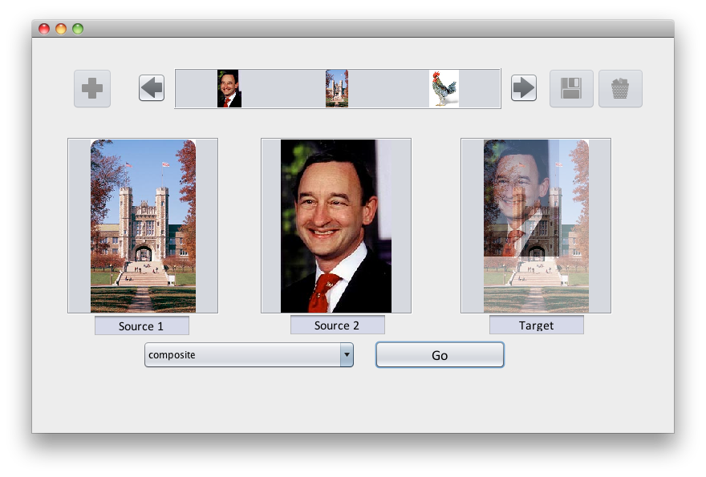
-
Complete the method called negative that will produce the negative image by inverting the intensity of each component.
For example, if the parameter value is 0, you should return 255. If the parameter value is 1, you should return 254, and so on.
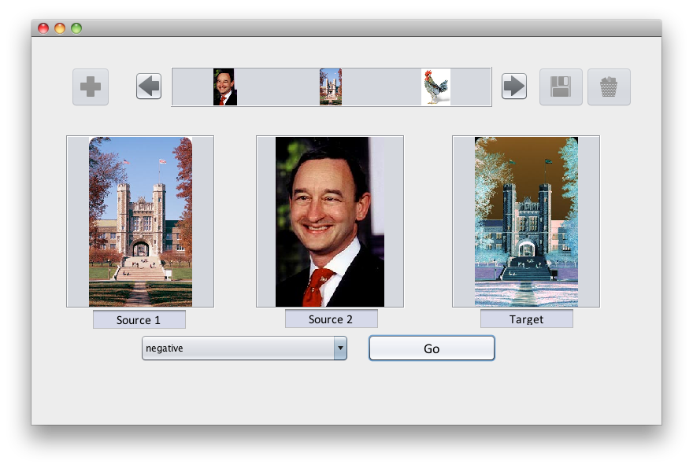
-
Complete the method posterize that will reduce the number of possible colors in an image. For a given color component, your method will choose between two intensities, 0 or 255, which correspond to that color component being turned off or on completely. So, since each color has three components (red, green, and blue), you will end up with an image that has only 8 different colors.
Remember that you are not allowed to use conditionals (if) statements for this part of the lab.
Hint: : Recall that color components are in the range 0-255. Also, recall that if you divide an int by another int, the result number will be truncated. For example, 130 / 128 =& 1, but 125 / 128 =& 0.
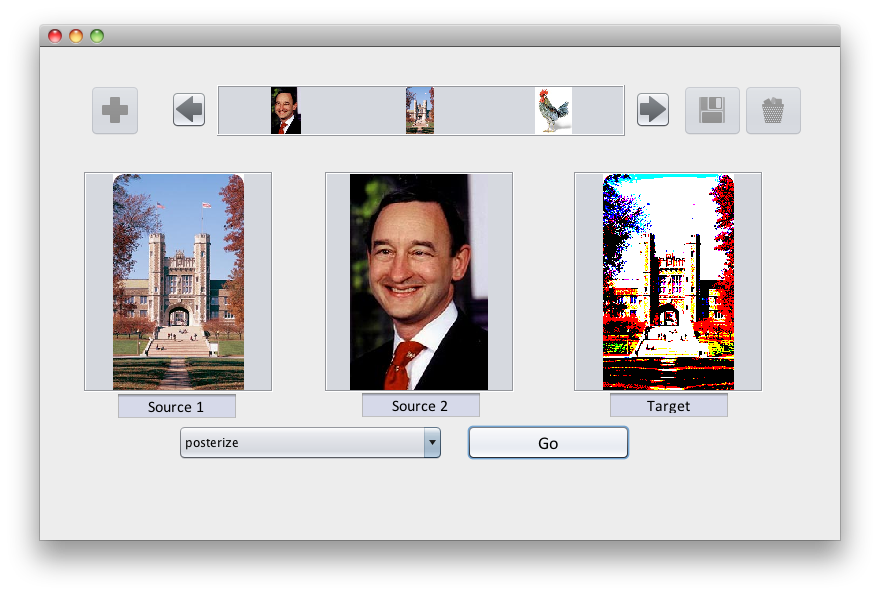
Color filters
Note that each pixel of an image is represented as a Color object.
- Continue to use no conditional execution for this part: only arithmetic expressions as you have learned them in Module 1.
- To create a new Color, you must specify its red, green, and blue components in that order. For example
Color c = new Color(25,128,0);declares c to be a color with some red (25 out of 255), half of the possible green, and no blue.
- If you have a Color c, then you can get its red, green, and blue components as follows:
int red = c.getRed();int green = c.getGreen();int blue = c.getBlue();
Create and test methods (whose parameters and return values are Colors)
with the following specifications.
-
Complete the method brighter that will return, for each pixel, a Color that is brighter than the original.
The Color class makes this easy because it already provides a brighter() method that returns a brighter color.
If c is a color, then c.brighter() is a brighter version of c's color.
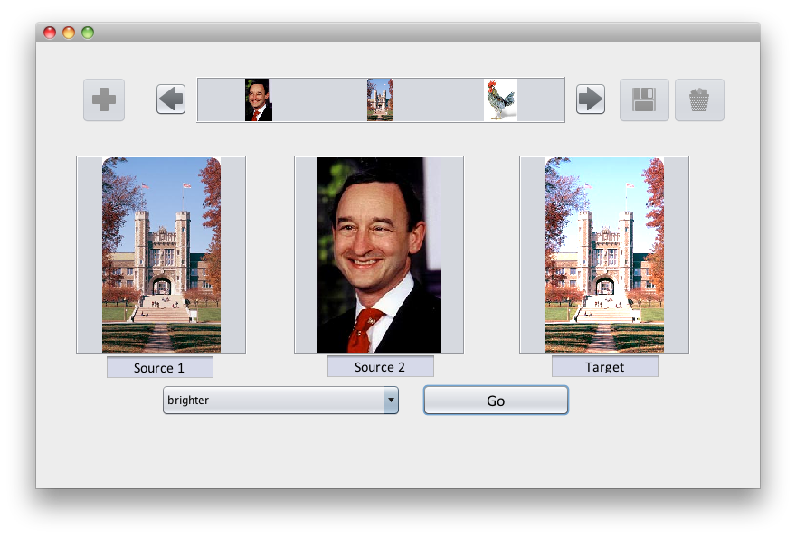
-
Complete the method grayscale that will make a grayscale image from a color image. To do this, you will take in one Color parameter (the Color object for a pixel from the original image) and will produce a new Color in which all the components (red, green, and blue) have the same value.
Hint: To choose which value, average the three components of the original color.
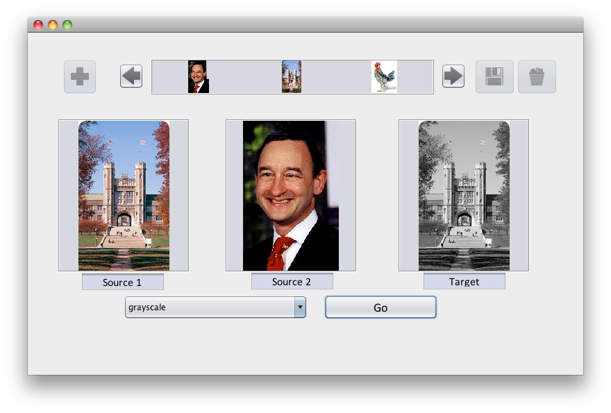
More Color filters
OK, now you can use if statements!
-
Complete the method blackAndWhite that produces a black and white image by returning, for each pixel, a Color that is either black or white, depending upon the overall intensity of the original color.
For your return value, use the constant Color.BLACK or Color.WHITE. It's up to you how to decide when a color's components, taken as a whole, should be considered black or white.
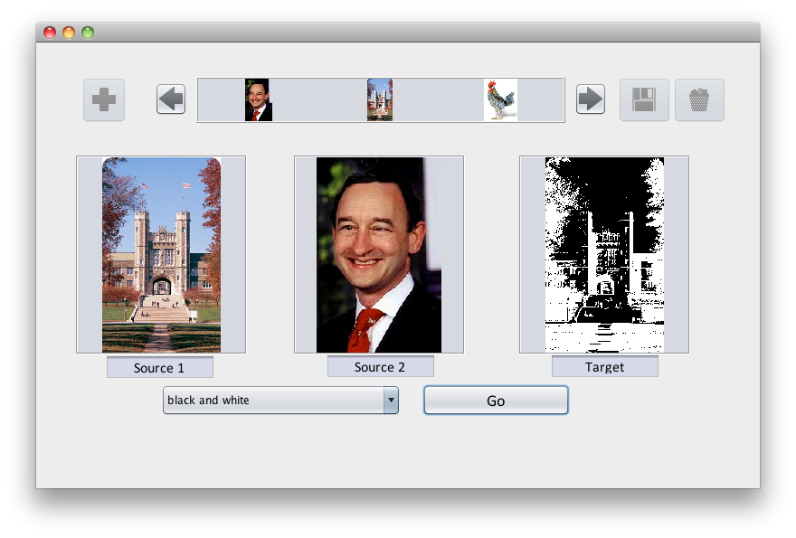
-
Complete the method combineBrighter that combines two images by choosing for each pixel the color from the image that has the brighter pixel in that location. To determine which pixel is brighter, compare the sums of the red, green, and blue components of the two pixels. Since the ProcessorTool will run your method for every pair of pixels, the resulting image will have some pixels from the first image and some from the second image.
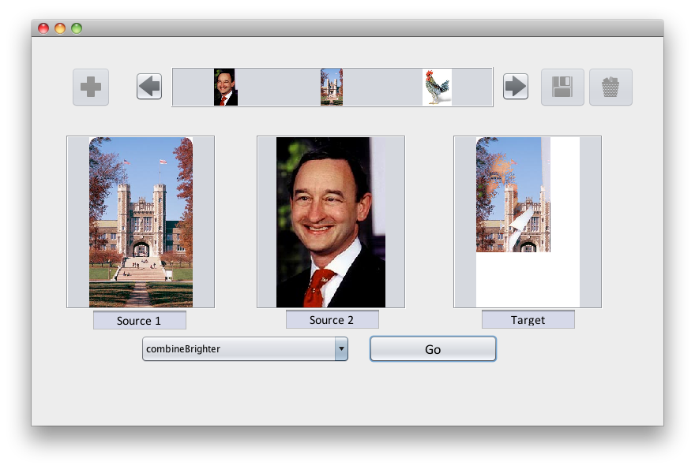
Submitting your work
To submit your work, contact the instructor or a TA. They will walk you through the submission process. Be prepared to show them the work that you have done and answer their questions about it!
Extension 1.3: Image Processor Continued (4 points)
Authors:
- Ron K. Cytron
- Arman Guerra
- Ken Goldman
This is a continuation of the previous extension. It is therefore suggested that you do the previous extension first.
Directions:
The main program you should run for this extension is Background, which conveniently sets up the images in the bar and panels for you to do this work.
So run Background as a Java application. You will see two similar images in the source panels, and some other images in the image bar.
Open the Filters class and begin your work as described below.
Two more Color filters
You can use if statements for this work.
-
Complete the method bgSubtract so that it returns a Color as follows:
-
If the source1Color and source2Color colors are sufficiently similar, return Color.BLUE. The idea is to subtract the background so that what is common between the two source images is shown in blue.
We will define a new term for this lab, the Saturation Tolerance. What this tells us is how different two colors can be, and still be considered sufficiently similar. For instance; if the Saturation Tolerance is 10, one color has a red value of 130, and another color has a red value of 138, these would be considered sufficiently similar. But if one color had a red value of 35 and another had a red value of 50, they would not be considered sufficiently similar
-
Otherwise, return source1Color.
An example is shown below:
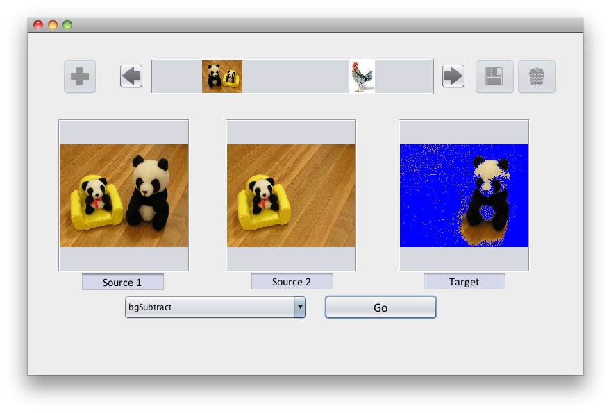
Where the two images are similar, the corresponding pixel in the target image is blue, because your method returned Color.BLUE. Where the images differ, the first image is shown in the target, because your method returned the pixel color from the first image.
-
-
Complete the method bgReplace that functions as follows:
- If the source1Color is Color.BLUE, then return the source2Color.
- Otherwise, return source1Color.
The effect of this filter is to replace the blue color from the first image with the corresponding pixels from the second image.
To see this work, perform the following steps:
-
Drag the blue-screen image from the target panel and drop it into the leftmost source panel. The GUI should replace what was there with the blue-screen image.
-
Drag the other two-bear picture (the reverse of the one shown in the source panel) from the top icon bar into the middle source panel.
After dragging these images around the GUI, the results should resemble the following:
Note: No transformation is applied yet. The copy operation appears as the menu choice but the Go button was not pressed.
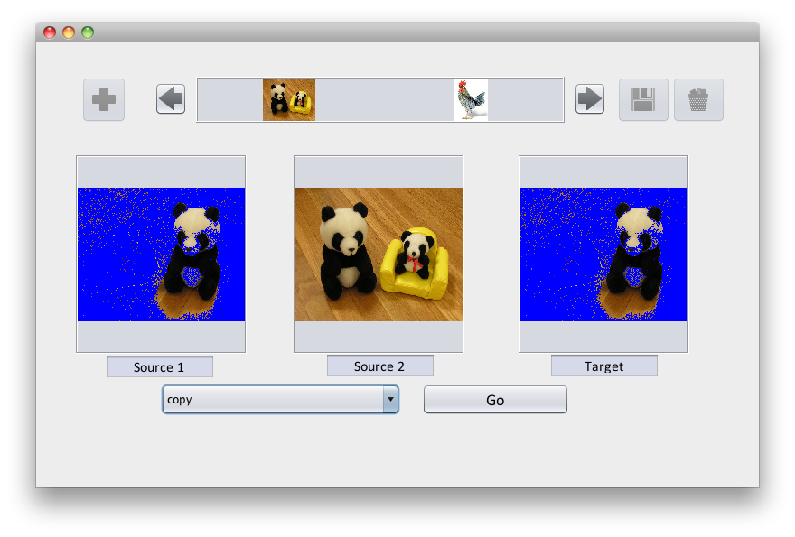
-
Now apply the bgReplace filter, and the results resemble the following:
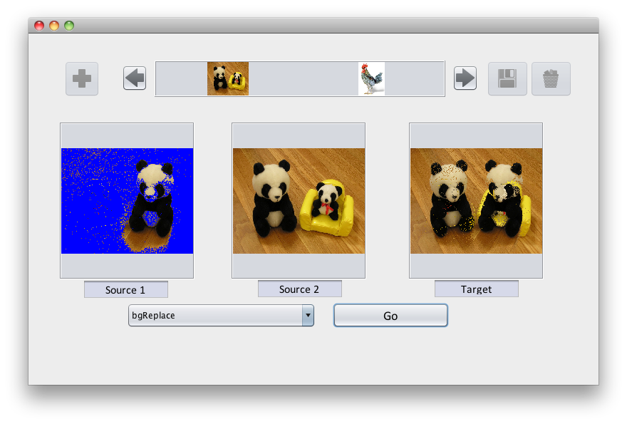
-
For fun, drag the chicken image from the top icon bar into the middle source panel, and reapply the * bgReplace* filter. The results should resemble the following:
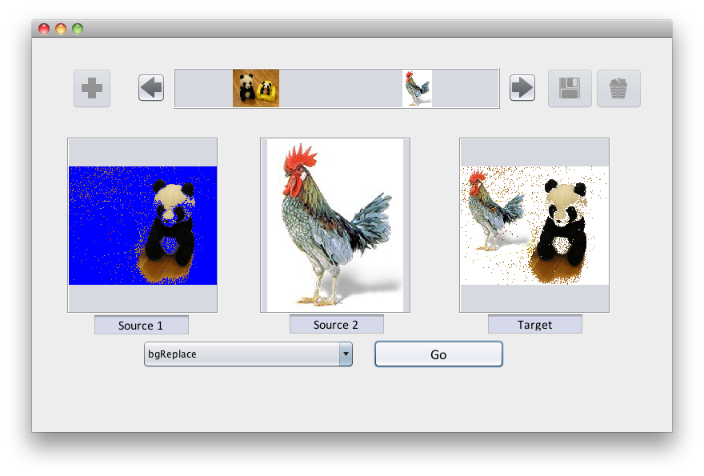
The chicken is a smaller image, so it did not take up the entire size of the bear image.
Submitting your work
To submit your work, contact the instructor or a TA. They will walk you through the submission process. Be prepared to show them the work that you have done and answer their questions about it!